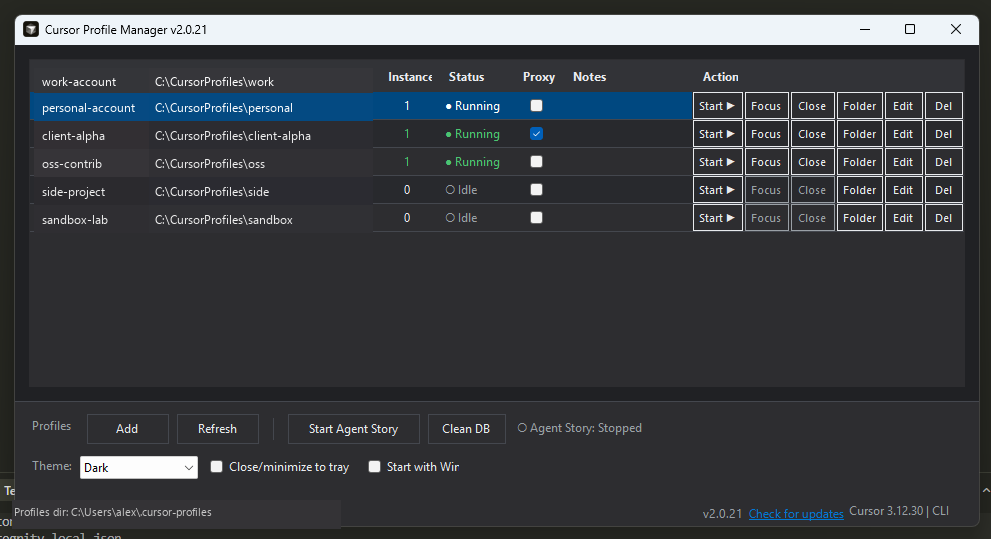

Cursor Profile Manager
Multiple Cursor profiles. Separate accounts on one machine.
Each profile keeps its own login, extensions, settings, and AI chat history so you can work the same codebase under different Cursor accounts.

How to use
Windows only. Each profile launches Cursor with its own --user-data-dir, so logins, extensions, settings, and AI chat history stay isolated.
-
Obtain and run on Windows
Clone the repository, then run
.\cursor-profile-manager.ps1or double-clickcursor-profile-manager.bat. Optionally run.\install-desktop-shortcut.ps1for a desktop shortcut with the Cursor icon. -
Add a profile
In the toolbar, click Add Profile. The app suggests an isolated folder under
%USERPROFILE%\.cursor-profiles\. You can optionally set a default project folder. -
Start Cursor under that profile
Click Start ▶ on the row (or double-click the row). Cursor opens with
--user-data-dirpointing at that profile folder. Click Start again on the same profile to open another window that shares the same session and extensions. -
Use a second profile for a different account
Add another profile, Start it, and sign in to a different Cursor account the first time that profile launches. Both profiles can run at the same time on the same project folders.
Optional: for proxied AI traffic capture (Agent Story), see the Usage section in the README.